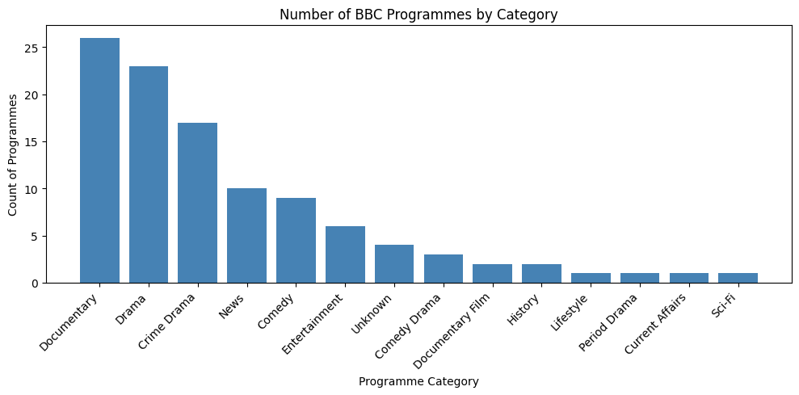
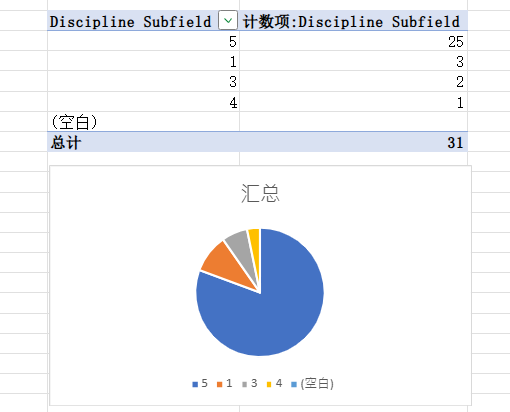

MY PORTFOLIO
Hello, I’m Zhu Yilin — a Digital Media postgraduate student at the University of Leeds. I’m interested in visual storytelling, creative technology and the ways digital media can connect people.
01 / ABOUT ME
A curious mind
in a digital world.
I am currently studying Digital Media at the University of Leeds. My studies let me explore how people create, share and experience ideas through digital platforms.
This portfolio collects my learning, experiments and creative works.
02 / PORTFOLIO
Selected interests & works
Digital storytelling
Exploring how stories can take shape across digital media.
Visual communication
Using design and words to make ideas easier to understand.
Creative media
Learning, experimenting and developing new creative skills, including HTML web development.
03 / CONTACT
Thanks for stopping by.
More projects and reflections will be added as my portfolio grows.
Email: qjfr0206@leeds.ac.uk
04 / week-2 REFLECTION
Self-reflection
This webpage is mostly text-heavy and lacks image content. There are no interactive clickable elements. I will learn and master these skills in my future study.
05 / week-3 WEB SCRAPING
COMM5780M Workshop Project

Dataset: BBC programme category statistics
- Documentary 26
- Drama 23
- Crime Drama 17
- News 10
- Comedy 9
- Entertainment 6
- Unknown 4
- Comedy Drama 3
- Documentary Film 2
- History 2
- Lifestyle 1
- Period Drama 1
- Current Affairs 1
- Sci-Fi 1
Self-reflection
I’ve found that I can only scrape sites like the BBC. Other websites such as X and Apple’s official site have anti-scraping systems, making data extraction extremely difficult.
06 / week-4 REFLECTION
Self-reflection
Our group chose Scenario 1: Student Advisory Board for the discussion. We used Communalytic to scrape Reddit posts. We found that most students who were caught using AI made various excuses to justify their behaviour. ChatGPT was the most commonly used tool. The majority of posts were complaints about being detected. Many of these students had previously viewed AI tools as very helpful, yet after being caught, they claimed AI was unhelpful and poor.
07 / week-5 Data Visualisation
Data Visualisation

Self-reflection
I noticed the dataset contained extra entries. I accidentally selected an additional row, which created blank values. This did not significantly affect the chart, but I will be more precise with my selection next time.